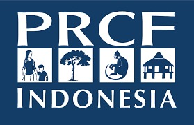

Offline · menampilkan data terakhir
KeyakinanTinggiSedangRendah

Yayasan PRCF IndonesiaPilih Hutan Desa yang ingin dipantau. Status dihitung dari titik panas satelit NASA 7 hari terakhir.
Kabupaten Kapuas Hulu · Kalimantan Barat · data NASA FIRMS (VIIRS & MODIS)
Laporan berisi ringkasan, penjelasan cuaca, peta, grafik, tabel rekap, kejadian api dan lampiran detail (± 8–20 halaman). Dibuat langsung di HP dari basis data terbaru.
Atribut lengkap: koordinat, waktu UTC & WIB, satelit, keyakinan, FRP, suhu kecerahan, zona, jarak ke desa, petak, fungsi kawasan, tutupan 2026, gambut, status data (NRT/SP) dan ID kejadian. Luas piksel bukan luas terbakar.
Yayasan PRCF Indonesia
Fire Hotspot · Pemantauan Hutan Desa
Kabupaten Kapuas Hulu, Kalimantan Barat